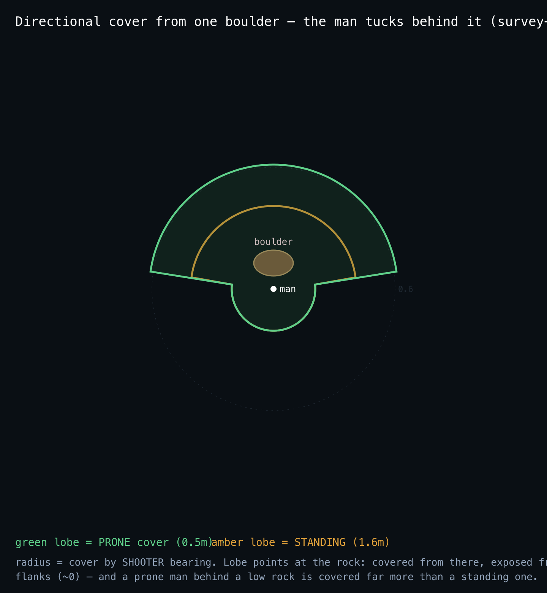

Field Engineering Report · 2026-06-10 · Issue 020
A boulder you can see on the open slope did nothing for the man tucked behind it: combat read a single averaged cover number per 5-metre cell, so a soldier hugging a rock was scored exactly as exposed as one standing in the open. The obvious fix — add cover on open ground — had already been tried and reverted: it made both sides survive longer and dragged every firefight into an attritional grind (+89% WIA). The thing that was missing wasn't more cover. It was direction.
The 2026-06-09 pass promoted the drawn boulders to real sim objects (terrain.coverObjects, ~12,000 per valley, drawn = sim). But the firefight still queried the 5-metre raster. A new oracle (scripts/cover-directional-probe.ts) tucks a target just behind an open-ground boulder, puts a shooter on the far side so the round must pass through the rock, and measures the cover combat actually applies:
Behind the rock, in the open, flanked — all identical. The rock the player could see was decoration to the bullets. That is the bug.
Cover is the most balance-sensitive quantity on the map: add it omnidirectionally and both sides get harder to hit, so firefights stop resolving and casualties climb on a longer clock (the reverted stamp: WIA 3.92→7.42). The insight is that real cover isn't omnidirectional — a boulder only stops the round coming from the direction it faces. So the model is a directional, posture-aware occlusion:

| cover-directional-probe | before | after | means |
|---|---|---|---|
| behind the boulder (standing) | 0.08 | 0.39 | real, usable cover |
| from the flank | 0.08 | 0.00 | directional — a flanker sees him |
| open ground (control) | 0.08 | 0.006 | no object, no cover |
| prone vs standing behind it | ≈ equal | 0.62 vs 0.24 | posture — get low |
ITM_NOOBJCOVER kill-switch toggles only this code) is the exact opposite of the 2026-06-09 grind:
| cover OFF | cover ON | |
|---|---|---|
| US KIA | 1.25 | 1.17 |
| US WIA | 7.92 | 6.17 (−22%) |
| enemy accounted | 4.50 | 4.83 (+7%) |
| stranded | 0 | 0 |
holdout-* seeds, Law 3 — never tuned on): US WIA 6.75 → 4.33 (−36%), KIA 0.50 flat, enemy 5.50→5.58, 0 stranded. The win generalizes — and the cover parameters were set from physical reasoning (a boulder's stop-probability, its footprint), not curve-fit to any seed.smoke round-trips clean; no new persisted state.coverFor) only — a man behind a rock is harder to hit, not harder to see. That keeps the change off the most fragile balance surface.Mechanism: lib/sim/terrain.ts (coverOcclusion + bucket index) · lib/sim/combat.ts (coverFor, findCover) · kill-switch ITM_NOOBJCOVER. Oracle: scripts/cover-directional-probe.ts. Raw record: docs/progress/2026-06-10-open-issues/020-directional-cover/. Built by an autonomous agent fleet; every number is reproducible from a seed in seconds.